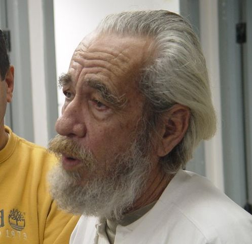

geraldo vandre — pra nao dizer que nao falei das flores
все знают грустную и прекрасную бахаовскую «a licao», но не все знают, что большая часть текста и музыка была позаимствована из оригинальной, не менее печальной песни вот этого самого композитора.
geraldo vandre

Caminhando e cantando
E seguindo a canção
Somos todos iguais
Braços dados ou não
Nas escolas, nas ruas
Campos, construções
Caminhando e cantando
E seguindo a canção
Vem, vamos embora
Que esperar não é saber
Quem sabe faz a hora
Não espera acontecer
Pelos campos há fome
Em grandes plantações
Pelas ruas marchando
Indecisos cordões
Ainda fazem da flor
Seu mais forte refrão
E acreditam nas flores
Vencendo o canhão
Vem, vamos embora
Que esperar não é saber
Quem sabe faz a hora
Não espera acontecer
Há soldados armados
Amados ou não
Quase todos perdidos
De armas na mão
Nos quartéis lhes ensinam
Uma antiga lição:
De morrer pela pátria
E viver sem razão
Vem, vamos embora
Que esperar não é saber
Quem sabe faz a hora
Não espera acontecer
Nas escolas, nas ruas
Campos, construções
Somos todos soldados
Armados ou não
Caminhando e cantando
E seguindo a canção
Somos todos iguais
Braços dados ou não
Os amores na mente
As flores no chão
A certeza na frente
A história na mão
Caminhando e cantando
E seguindo a canção
Aprendendo e ensinando
Uma nova lição
Vem, vamos embora
Que esperar não é saber
Quem sabe faz a hora
Não espera acontecer
слушаем внимательно и смахиваем скупую слезу.